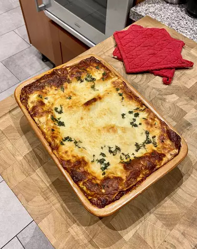

Lasagna

This lasagna recipe takes a little work, but it is so satisfying and filling that it's worth it!
When John Chandler submitted this lasagna recipe to Allrecipes more than 20 years ago, he had no idea how successful it would become. One of our top-performing recipes of all time, World's Best Lasagna racks up more than 7 million views per year and has ranked among the most popular lasagna recipes on the internet for two decades. Unfortunately, John unexpectedly passed away at 53 years old — read all about his life and legacy here.
Make our most popular lasagna today to find out what all the fuss is about!
Ingredients
- Meat
- Onion
- Garlic
- Crushed Tomatoes (Canned)
- Tomato Sauce (Canned) x 2
- Tomato Paste (Canned) x 2
- Sugar - Two tablespoons
- This lasagna recipe is flavored with fresh parsley, dried basil leaves, salt, Italian seasoning, fennel seeds, and black pepper.
- Lasagna Noodles
- Parmesan, mozzarella, and ricotta cheese make this lasagna extra decadent.
- Egg
Steps
- Make the meat sauce.
- Cook the noodles.
- Make the ricotta mixture.
- Layer the lasagna according to the recipe instructions.
- Cover with foil and bake.
- Let the lasagna rest before serving.